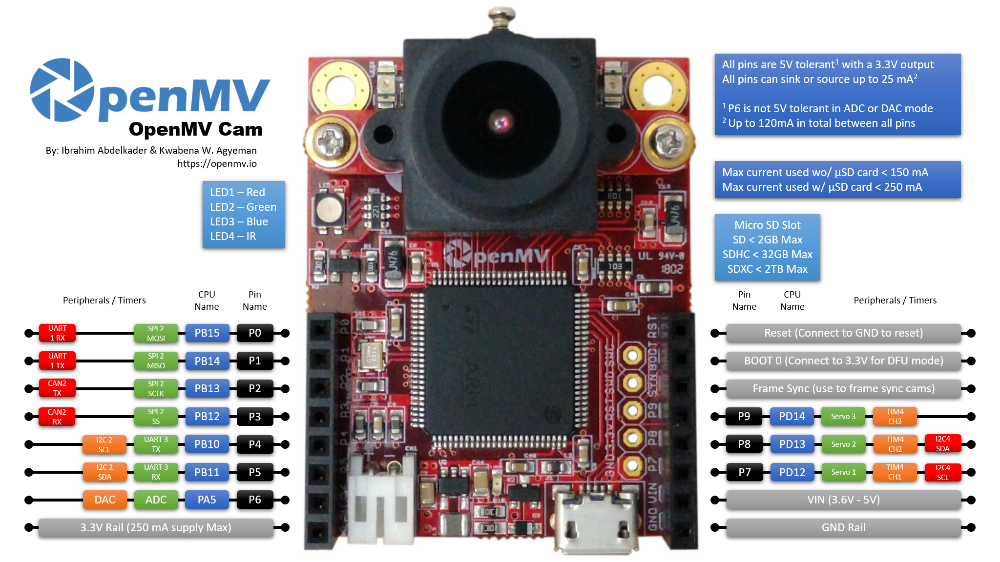

OpenMV Cam H7¶
Die OpenMV Cam H7 ist ein Board für maschinelles Sehen auf Cortex‑M7‑Basis, das um den STMicroelectronics STM32H743 mit 480 MHz, 1 MB internem SRAM, 2 MB internem Flash und einem Hardware‑JPEG‑Codec herum aufgebaut ist. Das Board wird in zwei Sensor‑Revisionen ausgeliefert — die H7 mit dem OV7725 und die H7 R2 mit dem ON Semi MT9M114 — aber Firmware, Pinbelegung und Python‑API sind identisch.

Vollständiges Datenblatt, Fotos und Abmessungen finden Sie auf der Produktseite der OpenMV Cam H7.
Highlights¶
STMicroelectronics STM32H743 Cortex‑M7 mit 480 MHz (1027 DMIPS).
Hardware‑JPEG‑Encoder/Decoder.
1 MB internes SRAM — kein externes SDRAM.
2 MB interner Flash (kein externer QSPI‑Flash).
OV7725‑Sensor (oder MT9M114 auf der H7 R2).
Full‑Speed‑USB (12 Mb/s) — erscheint dem Host gegenüber als VCP + USB‑Massenspeicher.
microSD‑Steckplatz — SD bis 2 GB, SDHC bis 32 GB, SDXC bis 2 TB.
LiPo‑Akkuanschluss (kein Ladegerät an Bord — schließen Sie eine geladene Zelle an oder versorgen Sie das Board über VIN/USB).
10 I/O‑Pins, 5‑V‑tolerant mit 3,3‑V‑Ausgang, 25 mA pro Pin (insgesamt 120 mA über den Header), interruptfähig. P6 ist im ADC‑ oder DAC‑Modus nicht 5‑V‑tolerant.
Benutzer‑RGB‑LED und zwei leistungsstarke 850‑nm‑IR‑LEDs für aktive Beleuchtung bei schwachem Licht.
Bemerkung
Die H7 hat keinen Power‑Management‑Chip an Bord: kein Akkuladegerät, keinen ADC für die Akkuspannung, keine Lade‑/Power‑Status‑LEDs und keinen Hardware‑Power‑Button. Schließen Sie einen vorgeladenen LiPo an den Akku‑JST an oder versorgen Sie das Board über USB / VIN.
Pinbelegung¶
{kind=link}

Pin‑Referenz¶
Pin‑Name |
Funktion |
|---|---|
P0 |
UART1 RX / SPI2 MOSI |
P1 |
UART1 TX / SPI2 MISO |
P2 |
SPI2 SCK / FDCAN2 TX |
P3 |
SPI2 NSS (CS) / FDCAN2 RX |
P4 |
I2C2 SCL / UART3 TX / TIM2 CH3 |
P5 |
I2C2 SDA / UART3 RX / TIM2 CH4 |
P6 |
ADC / DAC / TIM2 CH1 |
P7 |
I2C4 SCL / TIM4 CH1 |
P8 |
I2C4 SDA / TIM4 CH2 |
P9 |
TIM4 CH3 |
RESET |
auf GND ziehen, um das Board zurückzusetzen |
SYN |
Frame‑Sync‑Pad — nur mit dem Kamerasensor verdrahtet |
BOOT0 |
beim Einschalten auf 3,3 V ziehen für DFU / ROM‑Bootloader |
LED_RED |
Rot‑Kanal der RGB‑LED (active low) |
LED_GREEN |
Grün‑Kanal der RGB‑LED (active low) |
LED_BLUE |
Blau‑Kanal der RGB‑LED (active low) |
LED_IR |
leistungsstarke IR‑LEDs (beide Kanäle werden gemeinsam angesteuert) |
Bemerkung
Das SYN‑Pad am Header ist direkt mit der Trigger‑/Belichtungsleitung des Kamerasensors verbunden — es ist auf der H7 nicht mit dem MCU verbunden. Steuern oder lesen Sie es extern; aus MicroPython heraus können Sie es nicht umschalten.
Power‑Pins¶
3.3V — geregelte 3,3‑V‑Schiene. Bis zu 250 mA für Shields verfügbar (weniger, wenn die microSD‑Karte in Gebrauch ist). Anders als bei den neueren Kameras ist dieser Pin bidirektional — siehe die Warnung unten.
VIN — Eingang 3,6 – 5 V. Versorgt das Board über den Onboard‑Regler.
GND — gemeinsame Masse.
Ein 3,7‑V‑LiPo‑Anschluss ist ebenfalls vorhanden, aber die H7 hat kein Akkuladegerät — schließen Sie eine vorgeladene Zelle an oder versorgen Sie das Board stattdessen über VIN / USB.
Bemerkung
Wenn sowohl USB als auch VIN/LiPo anliegen, gewinnt der VIN/LiPo‑Eingang — der Onboard‑Power‑Switch wählt ihn anstelle von USB zur Versorgung des Boards.
Warnung
Der Akkuanschluss und VIN sind auf der H7 miteinander verbunden. Stecken Sie nicht gleichzeitig einen LiPo an und legen Sie VIN an — die beiden Versorgungen arbeiten gegeneinander und können den Akku, das Board oder beides beschädigen.
Warnung
Sie können die H7 mit Strom versorgen, indem Sie 3,3 V direkt in den 3.3V‑Pin einspeisen, falls Sie den Onboard‑Regler umgehen möchten. In diesem Fall legen Sie nicht gleichzeitig auch VIN oder USB‑Strom an — das Rückwärtstreiben des Reglers während eine andere Versorgung aktiv ist, kann die Kamera dauerhaft beschädigen und zerstören.
Tipp
Verwenden Sie den Akkulaufzeit‑Schätzer, um zu modellieren, wie lange die H7 mit einem Akku bei einem gegebenen Aktiv‑/Deep‑Sleep‑Tastverhältnis läuft.
Recovery‑ und Debug‑Pins¶
RESET — auf GND ziehen, um das Board zurückzusetzen. Beim Loslassen startet der MCU normal hoch.
BOOT0 — beim Einschalten des Boards auf 3,3 V ziehen, um in den STM32‑ROM‑Bootloader (DFU‑Modus) zu gelangen. OpenMV IDE nutzt diesen Modus, um den Onboard‑Bootloader neu zu flashen.
Das Board stellt einen SWD‑Debug‑Header (RST / SWCLK / SWDIO) neben dem GPIO‑Header bereit, kompatibel mit ST‑LINK‑ und SEGGER‑J‑Link‑Adaptern.
Onboard‑Peripheriegeräte¶
LEDs¶
Die H7 hat eine einzelne Benutzer‑RGB‑LED sowie ein Paar leistungsstarker 850‑nm‑IR‑LEDs:
Benutzer‑RGB‑LED — softwaresteuerbar, bereitgestellt als
LED_RED,LED_GREENundLED_BLUE:from machine import LED LED("LED_RED").on() LED("LED_GREEN").on() LED("LED_BLUE").on()
IR‑LEDs — beide LEDs werden gemeinsam über den
LED_IR‑Pin angesteuert.LED_IRist in der Hardware active high verdrahtet, während die Firmware jede andere Onboard‑LED als active low behandelt, verwenden Sie daherlow()/high()statton()/off()(was die Logik invertieren würde):from machine import LED ir = LED("LED_IR") ir.low() # turn IR illumination ON ir.high() # turn IR illumination OFF
Kamerasensor¶
Der OV7725 (oder MT9M114 auf der H7 R2) wird über das Modul csi — Kamerasensoren angesteuert:
import csi
cam = csi.CSI()
cam.reset()
cam.pixformat(csi.RGB565)
cam.framesize(csi.QVGA)
cam.snapshot(time=2000) # let auto‑exposure settle
while True:
img = cam.snapshot()
Der Sensor sitzt auf einem abnehmbaren Modul — tauschen Sie ihn gegen eines der anderen OpenMV‑Kameramodule (Global Shutter, Thermal, höhere Auflösung usw.) aus, ohne den Rest des Boards zu ändern.
microSD‑Karte¶
Wenn eine Karte eingesteckt ist, wird sie automatisch unter /sdcard eingebunden und ist über das reguläre Dateisystem nutzbar:
import os
for entry in os.listdir("/sdcard"):
print(entry)
Bus‑Referenz¶
GPIO¶
Verwenden Sie machine.Pin, um einen der bedruckten Pins zu lesen oder anzusteuern. Ausgänge sind 3,3‑V‑CMOS, 5‑V‑tolerant auf der Eingangsseite und können pro Pin bis zu 25 mA aufnehmen/liefern (insgesamt 120 mA über den gesamten Header).
from machine import Pin
out = Pin("P0", Pin.OUT)
out.on()
out.off()
out.value(1)
inp = Pin("P1", Pin.IN, Pin.PULL_UP)
print(inp.value())
Jeder Eingangspin kann zudem bei Flankenwechseln einen Interrupt auslösen:
def handler(pin):
print("triggered:", pin)
Pin("P1", Pin.IN, Pin.PULL_UP).irq(
handler, Pin.IRQ_FALLING | Pin.IRQ_RISING,
)
UART¶
Bus |
TX |
RX |
|---|---|---|
UART1 |
P1 |
P0 |
UART3 |
P4 |
P5 |
from machine import UART
uart = UART(3, baudrate=115200)
uart.write("hello")
uart.read(5)
I²C¶
Bus |
SCL |
SDA |
|---|---|---|
I2C2 |
P4 |
P5 |
I2C4 |
P7 |
P8 |
from machine import I2C
i2c = I2C(2, freq=400_000)
i2c.scan()
i2c.writeto(0x76, b"hi")
Dieselbe Hardware kann über machine.I2CTarget auch im Target‑(Slave‑)Modus verwendet werden, um einem anderen I²C‑Controller einen Speicherbereich bereitzustellen:
from machine import I2CTarget
buf = bytearray(32)
target = I2CTarget(2, addr=0x42, mem=buf)
SPI¶
Bus |
MOSI |
MISO |
SCK |
CS |
|---|---|---|---|---|
SPI2 |
P0 |
P1 |
P2 |
P3 |
from machine import SPI
from machine import Pin
spi = SPI(2, baudrate=10_000_000)
cs = Pin("P3", Pin.OUT, value=1) # CS is not driven by the SPI peripheral
cs.value(0)
spi.write(b"hello")
cs.value(1)
CAN (FDCAN)¶
Bus |
TX |
RX |
|---|---|---|
FDCAN2 |
P2 |
P3 |
from machine import CAN
can = CAN(2, 500_000)
can.set_filters(None)
can.send(0x123, b"\xDE\xAD\xBE\xEF")
print(can.recv())
ADC und DAC¶
P6 ist der einzige analoge Benutzerpin. Er kann entweder als 12‑Bit‑ADC‑Eingang oder als DAC‑Ausgang genutzt werden.
ADC — Vollausschlag bei 3,3 V am Pin:
from machine import ADC import time adc = ADC("P6") while True: voltage = adc.read_u16() * 3.3 / 65535 print(voltage) time.sleep_ms(100)
DAC — über
pyb.DAC. Der 8‑Bit‑Wert deckt 0–3,3 V ab:from pyb import DAC dac = DAC("P6") voltage = 1.65 dac.write(int(voltage / 3.3 * 255))
Im ADC‑ oder DAC‑Modus ist P6 nur 3,3‑V‑tolerant — speisen Sie keine 5 V ein.
PWM¶
Pin |
Timer / Kanal |
|---|---|
P4 |
TIM2 CH3 |
P5 |
TIM2 CH4 |
P6 |
TIM2 CH1 |
P7 |
TIM4 CH1 |
P8 |
TIM4 CH2 |
P9 |
TIM4 CH3 |
Bemerkung
TIM1 ist von der Firmware reserviert, um den Pixeltakt des Kamerasensors zu erzeugen, daher können die TIM1‑Kanäle, die physisch auf P0/P1/P2 liegen, nicht für Benutzer‑PWM verwendet werden, ohne die Kamera lahmzulegen.
TIM4 wird gemeinsam genutzt mit pyb.Servo — das Instanziieren eines Servos konfiguriert den gesamten Timer für den 50‑Hz‑Betrieb um, mischen Sie daher nicht machine.PWM auf P7/P8/P9 mit pyb.Servo im selben Skript.
Steuern Sie jeden davon über machine.PWM an:
from machine import Pin, PWM
pwm = PWM(Pin("P7"), freq=1_000, duty_u16=32768)
Software‑Bit‑Banging‑Busse¶
machine.SoftI2C und machine.SoftSPI funktionieren an jedem GPIO, falls Sie einen zusätzlichen Bus benötigen.
Thermosensor (extern)¶
Die Firmware enthält den Treiber fir — Wärmesensortreiber (fir == far infrared) für extern verdrahtete Wärmebildkameras:
MLX90621 — 16 × 4 IR‑Array
MLX90640 — 32 × 24 IR‑Array
MLX90641 — 16 × 12 IR‑Array
AMG8833 — 8 × 8 IR‑Array
Verdrahten Sie das Modul mit dem I²C‑Bus des Boards und lesen Sie Einzelbilder mit fir.init() + fir.snapshot():
import time
import image
import fir
fir.init() # auto‑detects the sensor
clock = time.clock()
while True:
clock.tick()
try:
img = fir.snapshot(x_scale=5, y_scale=5,
color_palette=image.PALETTE_IRONBOW,
hint=image.BICUBIC,
copy_to_fb=True)
except OSError:
continue
print(clock.fps())
Der fir‑Treiber kommuniziert mit dem Sensor nur über I²C 2 — verdrahten Sie das Modul mit P4 (SCL) und P5 (SDA).
Timing¶
time¶
Das Modul time deckt blockierende Verzögerungen, monotone Ticks und die Messung verstrichener Zeit ab:
import time
time.sleep(1) # seconds
time.sleep_ms(500)
time.sleep_us(10)
start = time.ticks_ms()
# ...do work...
elapsed = time.ticks_diff(time.ticks_ms(), start)
Virtuelle Timer¶
machine.Timer plant periodische oder einmalige Callbacks, ohne einen Hardware‑Timer‑Slot zu belegen. Übergeben Sie -1 als id, um einen virtuellen (Software‑)Timer zu verwenden:
from machine import Timer
one_shot = Timer(-1)
one_shot.init(period=5_000, mode=Timer.ONE_SHOT,
callback=lambda t: print("once"))
periodic = Timer(-1)
periodic.init(period=2_000, mode=Timer.PERIODIC,
callback=lambda t: print("tick"))
Periodenwerte sind in Millisekunden angegeben. Rufen Sie deinit() auf, um ihn zu stoppen und den Slot freizugeben.
Echtzeituhr¶
machine.RTC hält die Wanduhrzeit über Resets hinweg:
from machine import RTC
rtc = RTC()
rtc.datetime((2026, 4, 30, 4, 12, 0, 0, 0)) # Y, M, D, weekday, h, m, s, subsec
print(rtc.datetime())
Watchdog¶
machine.WDT setzt das Board zurück, wenn die Anwendung hängen bleibt. Einmal gestartet, kann er nicht mehr gestoppt oder neu konfiguriert werden — füttern Sie ihn regelmäßig innerhalb Ihrer Hauptschleife:
from machine import WDT
wdt = WDT(timeout=5_000) # 5 second window
while True:
# ...do work...
wdt.feed()
Boot‑ und Laufzeitinformationen¶
USB‑Bootloader‑Fenster¶
Bei jedem Einschalten führt die Kamera einen kurzen Bootloader (einige Sekunden) aus, der es OpenMV IDE ermöglicht, die Firmware zu aktualisieren, ohne dass der Benutzer in den DFU‑Modus wechseln muss. Nach Ablauf des Fensters übergibt der Bootloader an boot.py und anschließend main.py.
Ein laufendes Skript kann den Bootloader bei Bedarf erneut betreten, indem es machine.bootloader() aufruft:
import machine
machine.bootloader()
Dateisystem und Boot‑Reihenfolge¶
Die H7‑Firmware bindet beim Booten bis zu drei Dateisysteme ein:
Interner Flash — immer unter
/flasheingebunden. Enthält standardmäßigmain.pyundREADME.txt; wird beim allerersten Booten erstellt.microSD‑Karte — wenn eine Karte eingesteckt ist, wird sie unter
/sdcardeingebunden.ROMFS — schreibgeschütztes, speicherzugeordnetes Dateisystem unter
/rom, das verwendet wird, um große Datenbestände (z. B. KI‑Modelle) auszuliefern, die von Zero‑Copy‑Zugriff profitieren. Wird beim Start automatisch von MicroPython eingebunden, bevor irgendein Benutzer‑Python‑Code läuft.
Nach dem Einbinden wird das Arbeitsverzeichnis auf /sdcard gesetzt, wenn die Karte vorhanden ist, andernfalls auf /flash. Der Interpreter führt dann Skripte aus diesem Verzeichnis aus:
boot.pywird bei jedem Soft‑Reset ausgeführt (Kaltstart,Ctrl‑Daus der REPL oder immer wenn das laufende Skript zurückkehrt).main.pywird nur beim Kaltstart ausgeführt, unmittelbar nachboot.py. Nachfolgende Soft‑Resets führenboot.pyerneut aus, springen aber direkt zur REPL — ummain.pyerneut auszuführen, müssen Sie das Board vollständig zurücksetzen.
Wenn Sie ein boot.py oder main.py auf die SD‑Karte ablegen, überschreibt dies die Kopie im Flash, ohne diese anzutasten — beide Dateien werden im Boot‑Verzeichnis gesucht (/sdcard, wenn die Karte eingebunden ist, andernfalls /flash).
Das standardmäßige main.py, das auf einem frisch geflashten Board ausgeliefert wird, lässt lediglich den blauen Kanal der Benutzer‑RGB‑LED als Herzschlag blinken (zwei kurze Pulse, kurze Pause), sodass Sie ohne angeschlossenen Host erkennen können, dass die Firmware sauber gebootet ist.
sys.path wird erweitert, um alle drei Dateisysteme und ihre lib/‑Unterverzeichnisse einzuschließen, sodass importierbare Module in /flash/lib, /sdcard/lib oder /rom/lib liegen können.
Um das System zu zwingen, eine eingesteckte SD‑Karte zu ignorieren (zum Beispiel, um das main.py im Flash auch bei vorhandener Karte auszuführen), erstellen Sie eine leere Datei namens SKIPSD im Stammverzeichnis von /flash.
Wenn das Board über USB verbunden ist, meldet sich das Boot‑Dateisystem (/sdcard, wenn eine Karte vorhanden ist, andernfalls /flash) auch als USB‑Massenspeicherlaufwerk beim Host an, sodass Sie boot.py, main.py und andere Dateien direkt bearbeiten können. Werfen Sie das Laufwerk aus, bevor Sie die Kamera zurücksetzen, damit der Host seine zwischengespeicherten Schreibvorgänge ausführt.
Bemerkung
Da das Betriebssystem das Laufwerk als passives Blockgerät behandelt, werden Dateien, die von auf der OpenMV Cam laufendem Code erstellt oder geändert werden, erst angezeigt, nachdem der Host das Laufwerk erneut eingebunden hat. Wenn sowohl das Betriebssystem als auch die OpenMV Cam gleichzeitig in dasselbe Dateisystem schreiben, gewinnt das Betriebssystem und überschreibt die von der Kamera vorgenommenen Änderungen. Verwenden Sie die SD‑Karte für alle Daten, die das Skript zurückschreibt, und binden Sie sie erneut ein, bevor Sie diese Dateien vom Host aus lesen.
Bemerkung
Der rote Kanal der Benutzer‑RGB‑LED kann kurz aufleuchten, während der Host vom USB‑Massenspeicherlaufwerk liest oder darauf schreibt — dies ist eine firmwaregesteuerte Aktivitätsanzeige, kein Fehler.
Speichergrößen¶
Die H7 wird ausgeliefert mit:
/flash— 128 KB FAT‑Dateisystem, Lesen/Schreiben./rom— 128 KB schreibgeschütztes, speicherzugeordnetes ROMFS./sdcard— volle Größe der jeweils eingesteckten microSD‑Karte (sofern vorhanden), Lesen/Schreiben.
Hard‑Fault‑Anzeige¶
Wenn die Benutzer‑RGB‑LED schnell durch alle Farben zyklt — schnell genug, dass sie eher wie eine funkelnde weiße LED als wie einzelne Farbtöne aussieht — ist die Firmware auf einen nicht behebbaren Hard Fault gestoßen. Flashen Sie die Firmware neu, um das Board wiederherzustellen; wenn das erneute Flashen nicht hilft, ist das Board möglicherweise physisch beschädigt.
Software‑Bibliotheken¶
Im Bibliotheksindex finden Sie die vollständige Liste der Module — einschließlich derjenigen, die nur im H7‑Build vorkommen.